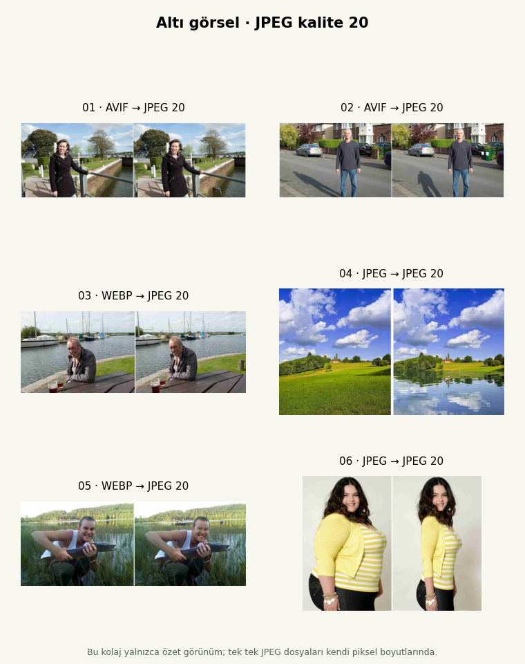

Kalite 20 dosyaları, tek yerde.
Altı görselin bütün, sol ve sağ JPEG 20 kopyaları; bütün görsellerin ELA ve overlay'leri; ayrıca duyuru, karga ve error kontrol/render çiftlerinin Q20 sürümleri.
| Kaynak | Bütün | Sol | Sağ | Haritalar |
|---|---|---|---|---|
| 01 · 596fa37556152c22b45c6eb2.avif | JPEG 20 | JPEG 20 | JPEG 20 | ELA · Overlay |
| 02 · 596fa37556152c22b45c6eb3.avif | JPEG 20 | JPEG 20 | JPEG 20 | ELA · Overlay |
| 03 · kh-composite-man-2.webp | JPEG 20 | JPEG 20 | JPEG 20 | ELA · Overlay |
| 04 · maxresdefault.jpg | JPEG 20 | JPEG 20 | JPEG 20 | ELA · Overlay |
| 05 · nintchdbpict000339476175.webp | JPEG 20 | JPEG 20 | JPEG 20 | ELA · Overlay |
| 06 · plus-size-celebrity-photoshopped-thinner-project-harpoon-thinnerbeauty-13.jpg | JPEG 20 | JPEG 20 | JPEG 20 | ELA · Overlay |


Önceki örneklerin kalite 20 halleri
| Örnek | Kontrol | Render |
|---|---|---|
| duyuru | Kontrol JPEG 20 | Render JPEG 20 |
| karga | Kontrol JPEG 20 | Render JPEG 20 |
| error | Kontrol JPEG 20 | Render JPEG 20 |



JPEG ayarı 20, sahtecilik olasılığı veya tespit doğruluğu değildir. Fark haritaları gerçek piksel farklarını, ortak 0–20 renk ölçeğiyle gösterir.